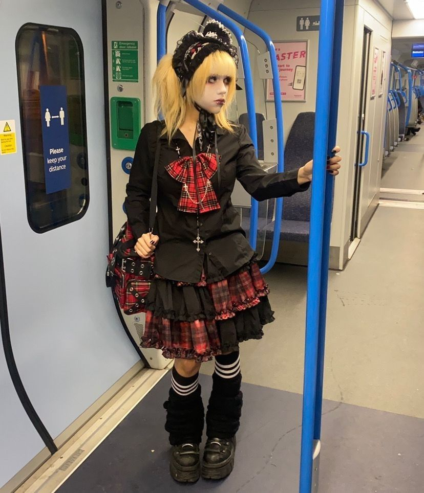
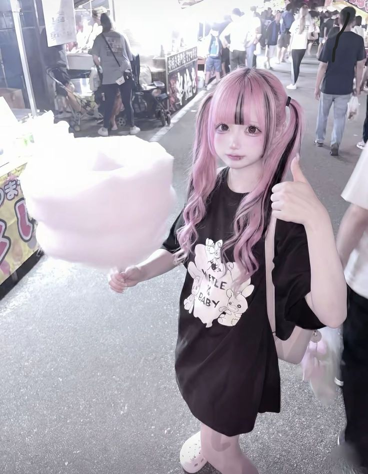
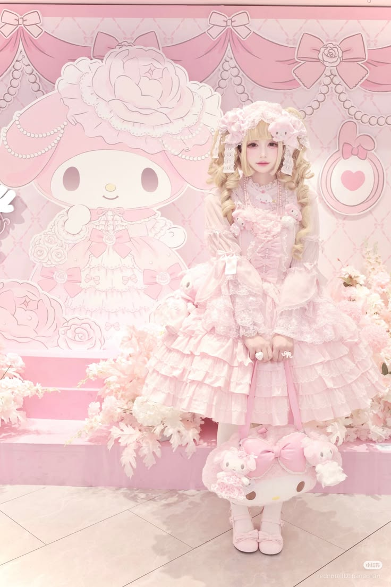
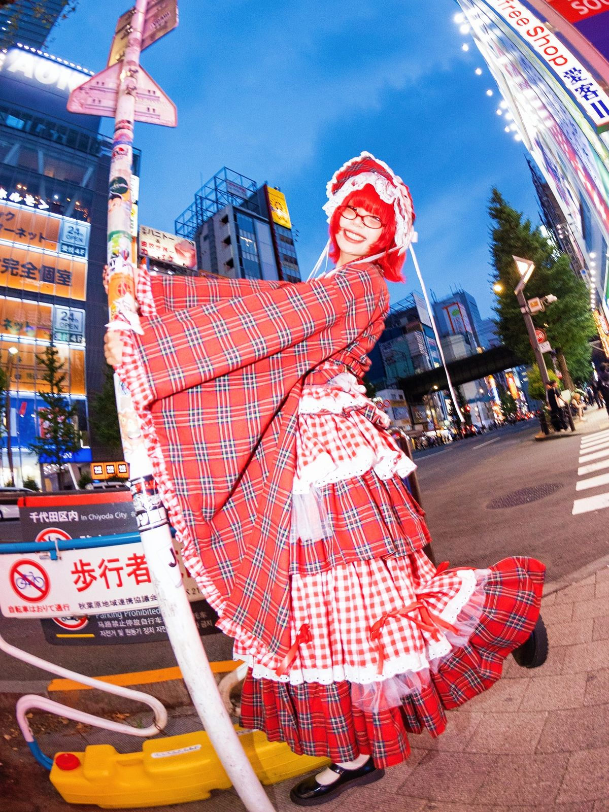

Japanese street fashion
Japanse street fashion is een levendige mix van moderne stedelijke invloeden, zoals skate en hip-hop, en traditioneel Japans erfgoed, gekenmerkt door losse pasvormen, laagjes en natuurlijke stoffen. Het draait om extreme zelfexpressie en het creatief combineren van laagjes, patronen en accessoires die wars zijn van mainstream moderegels. Deze unieke stijlen maken van de straten in Tokyo een voortdurend veranderende, levende catwalk die ontwerpers over de hele wereld inspireert.



